Intro
This book is on driver development using Rust. You get to procedurally write a UART driver for a RISCV chip called ESP32C3.
The chip costs less than 8 dollars, kindly... politely...with utmost humility... burn that cash. BURN THAT CAAAASHHH!!! Money machine go BRRRR!!!
Why the UART?
The UART driver was chosen because it is simple and hard at the same time. Both a beginner and an experienced folk can learn a lot while writing it.
For example, the beginner can write a minimal UART and concentrate on understanding the basics of driver development; No-std development,linking, flashing, logging, abstracting things in a standard way, interrupt and error-handling...
The pseudo_expert on the other hand can write a fully functional concurrent driver while focusing on things like performance optimization,concurrency and parallelism.
A dev can iteratively work on this one project for a long time while improving on it and still manage to find it challenging on each iteration. You keep on improving.
Moreover, the UART is needed in almost all embedded devices that require some form of I/O; making it a necessary topic for driver developers.
The main aim here is to teach, not to create the supreme UART driver ever seen in the multiverse.
What this book is NOT
This book does not explain driver development for a particular Operating System or Kernel. Be it Tock, RTOSes, Windows or linux. This book assumes that you are building a generic driver.
Quick links
To access the tutorial book, visit : this link
To access the source-code, visit this repo's sub-folder
Prerequisites for the Book
The prerequisites are not strict, you can always learn as you go:
- Computer architecture knowledge : you should have basic knowledge on things like RAM, ROM, CPU cycle, buses...
- Rust knowledge : You don't have to be a generics or atomics guru. If you are okay with the topics covered before chapter 14 in the Rust book, then you are overqualified for this.
- Have an esp32-c3.
- Some interest in driver development.
Intro to Drivers
This chapter is filled with definitions.
And as you all know, there are NO right definitions in the software world. People still debate what 'kernel' means. People are okay using the word 'serverless' apps. It's chaos everywhere.
So the definitions used here are constrained in the context of this book.
What's a driver?
A driver is a piece of software that sits in between a high-level program and a physical device. The high level program could be a kernel in this case. And the physical device could be an SSD disk attached to the motherboard.
The driver has 2 primary functions :
- Controlling the underlying device. (the SSD)
- Providing an interface for the kernel/higher-level program to interact with. The interface could contain things like public functions, data_structures, message passing endpoints...
Bird's view :
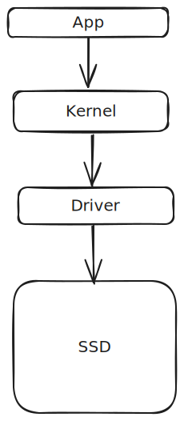
Demo : 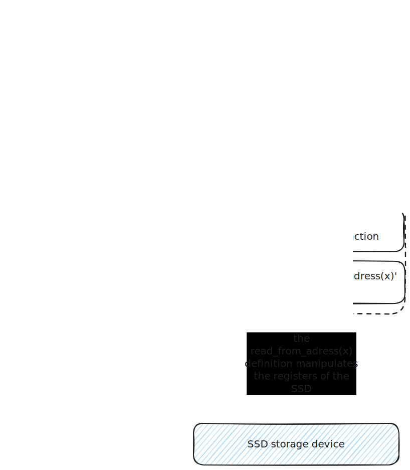
Let's break down the two main roles of the driver...
Role 1 : Controlling the Physical device below
TLDR :
The driver controls the hardware below by either Direct Register Programming or Memory Mapped Programming. This can be done in Assembly, low-level languages like C/Rust, or a mixture of both.
A physical device is a piece of electronic that does things, for example, an SSD disk stores data. You can read and write to that SSD device.
An SSD is roughly made up of :
- Storage cells
- A small IC or processor that implements the SSD's firmware
- The SSD's firmware stored in the SSD's ROM
- Exposed registers
The only way to interact with the device is through the exposed registers.
To make the device do things, you meaningfully supply electrical signals to the exposed registers. Once the CPU detects signals on the registers, it interprets them as parameters for the functions defined in the firmware. From there, the firmware does its duties.
Here is an extremely over-simplified and incorrect view of the SSD :
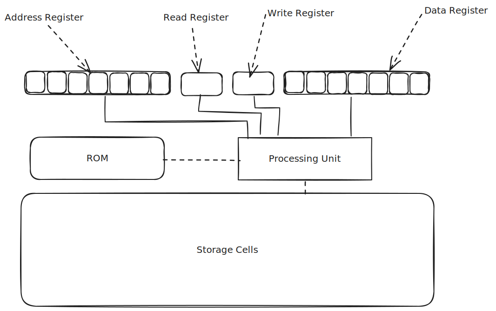
Usage :
- To store data to the SSD...
- You write an 8-bit address to the address register. This is called the 'destination address': it is the memory address of the place you want to write to in the SSD.
- You write the 8-bit data that you wanted to store in the data register. This is called the 'subject data'
- You make sure that the read register is not receiving any signal. This gets translated as 'read == false'.
- You supply an electric signal to the write register. This electrical signal is translated as 'write == true'.
- The SSD processor detects a signal in the 'write' register and immediately does the following :
- It starts executing the "write function" found in the firmware code.
- It passes the 'destination' address and the 'subject data' to it
- Viollah! The write operation is complete.
A manual driver?
If we had the ssd and a couple of electric wires only, we could store data without using a driver. All we have to do is to supply meaningful electric signals to the registers of the ssd.
For example, to store the number 1 into the address 0x05, we could do this... 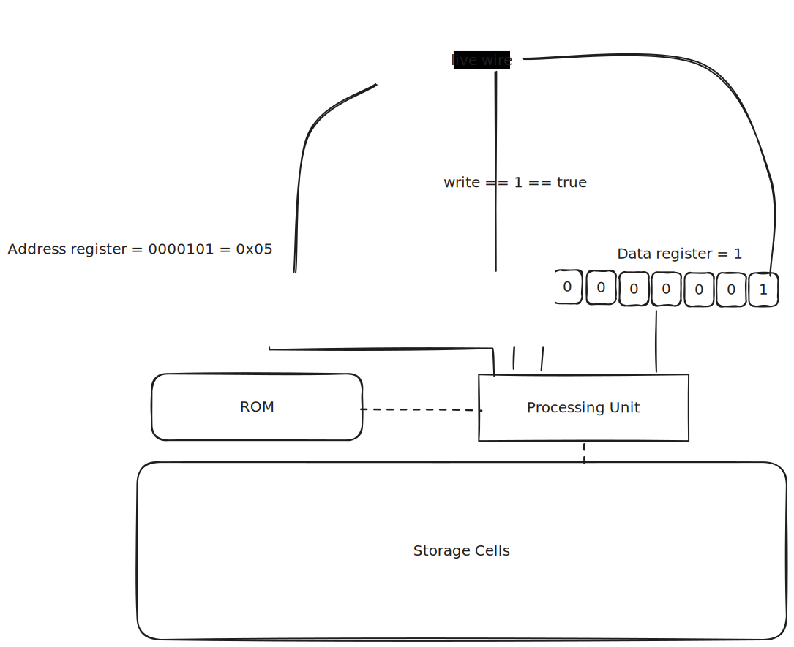
Programming
We are developers, we automate everything... especially when it is unnecessary. Our superpower.
So how do we automate this manual manipulation of SSD registers? How?? Panic everywhere!!
Solution 1: Direct Register Programming
We attach all the SSD registers DIRECTLY to the CPU. And then write some assembly code to change the values of the attached registers...
This solution gets the job done.
Demo: 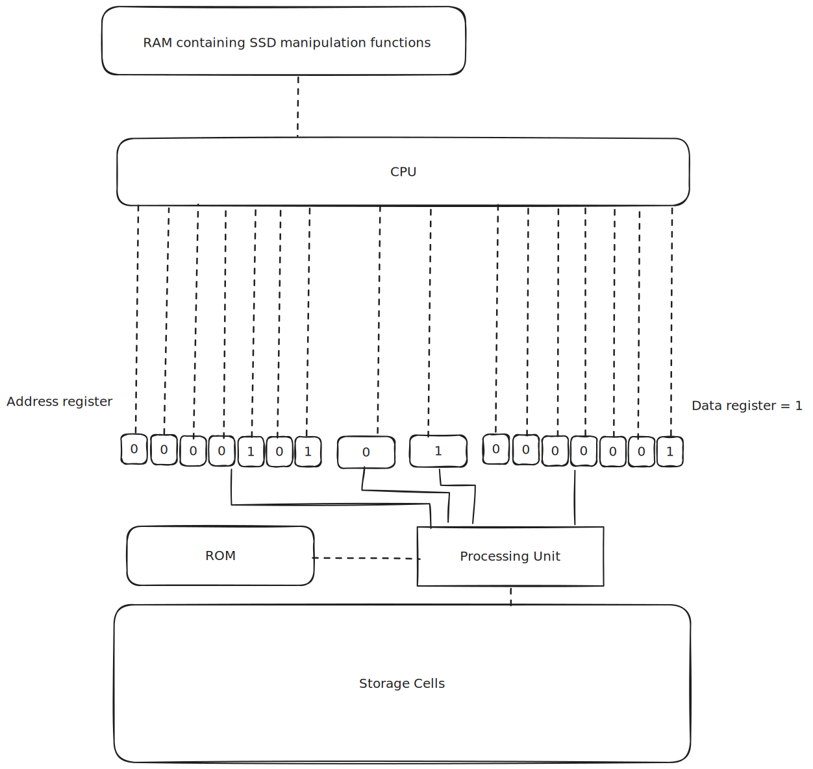
Solution 2: Memory Mapped Programming
The CPU has a limited number of registers. The RAM exists because of this exact reason.
So instead of directly attaching the SSD registers to the limited CPU registers, we could attach them to the RAM instead.
We could then write some assembly code to manipulate RAM addresses, hence indirectly manipulating the values of the SSD registers. This is called Memory-mapped I/O programming (mmio programming).
This is the method that we will stick to because it is more practical.
You could however use Direct Register Programming when building things like pace-makers, nanobots or some divine machine that is highly specialized and requires 100% performance.
Here is a demo of a naive MMIO setup : 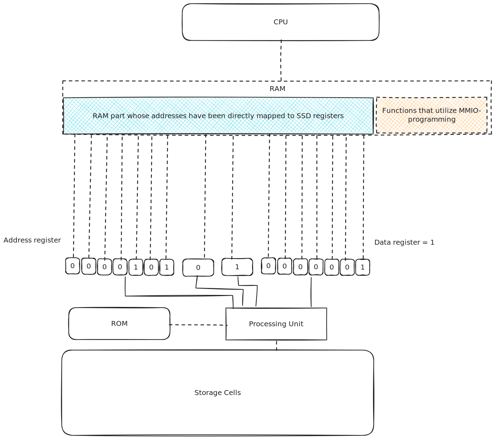
Summary
The driver controls the hardware below by either Direct Register Programming or Memory Mapped Programming. This can be done in Assembly, low-level languages like C/Rust, or a mixture of both.
Role 2: Providing an Interface
TLDR
- Just provide a well-thought out API.
- Err on the side of making communication between the kernel and the driver to be through message-passing.
- Err on the side of exporting structures that implement singletons.
One of the crucial aspects of driver development is designing a clear and concise API that effectively communicates the functionality of the driver to higher-level software components, such as the kernel or user-space applications. A well-thought-out API not only simplifies the integration of the driver into larger systems but also enhances its reusability across different projects.
Principles of a Good Driver API
1. Clarity and Consistency
The API should be intuitive and easy to understand, even for developers who are unfamiliar with the underlying hardware. Naming conventions, function signatures, and data structures should be consistent throughout the API to minimize confusion and improve readability.
2. Abstraction of Complexity
The API should abstract away the low-level details of hardware interaction, providing a high-level interface that hides the intricacies of device communication. This allows software developers to focus on the task at hand without getting bogged down by hardware-specific implementation details.
3. Modularity and Extensibility
A well-designed API should be modular and extensible, allowing developers to add new features or support additional hardware configurations without major modifications to existing code. Modular design promotes code reuse and simplifies maintenance over time.
4. Error Handling and Robustness
Effective error handling is essential for a reliable driver API. Error codes, return values, and error reporting mechanisms should be clearly defined and well-documented to facilitate debugging and troubleshooting.
Communication Patterns
When designing the interface between the kernel and the driver, it's essential to choose the most appropriate communication pattern based on the requirements of the system. While there are various communication mechanisms available, such as function calls, callbacks, and shared memory, message passing is often preferred for its simplicity and reliability.
Message Passing
Message passing involves sending structured data packets, or messages, between the kernel and the driver. This decouples the communication process from the underlying implementation details, making it easier to maintain and debug. Furthermore, message passing promotes a clear separation of concerns between the kernel and the driver, enhancing system stability and security.
Singleton Structures
In many cases, it's beneficial to export structures from the driver that implement the singleton pattern. Singleton structures represent a single instance of a particular resource or configuration, ensuring that there is only one instance of the structure across the system. This simplifies resource management and prevents conflicts or inconsistencies that may arise from multiple instances attempting to access the same resource simultaneously.
Types of Drivers
Classifications and fancy words do not matter, we go straight to the list :
Drivers classified by the level of 'how close to the metal?'
-
Function drivers : this drivers implement functions that directly manipulate registers. You could say that this are the OG drivers.
-
Filter drivers/ Processing drivers/ Wrapper drivers: This drivers take input from the function drivers and process them into palatable input and functions for the kernel. They can be seen as 'adapters' between the function-driver and the kernel. They can even be used to implement additional security features. Point being, their main function is wrapping the function-driver.
Oh look... this 👇🏻 is what we were talking about... thanks windows for your docs.

This image was borrowed from the Windows Driver development docs
Note : A driver stack is a collection of different drivers that work together to achieve a common goal. For example, you may use many function and filter drivers to control an integrated piece of hardware.
Another example : You may use a couple of filter drivers when porting a function driver to a new kernel environment.
Drivers classified by function
- storage drivers : eg ssd drivers
- File System Drivers : Drivers above the file system.
- system drivers : used in motherboard components instead of peripherals
- Input Device Drivers
- Network Drivers
- Communication drivers
- Virtual drivers (Emulators)
- This list can be as long as one can imagine... but I hope you get the drift
Bare Metal Programming
Bare Metal Programming !!!!!!!!!!
Welcome to the first cool chapter.
Philipp Oppermann's blog covered this chapter very well. You can read it here 👇🏽:
- Chapter 1 : A Freestanding Rust Binary
- Chapter 2 : A Minimal Rust Kernel
It would be an understatement to call those 2 chapters legendary.
No Std
Most rust programs depend on the standard library by default, including that simple 'hello world' you once wrote. The standard library on the other hand is dependent on the underlying operaring system or execution environment.
Drivers provide an interface for the OS to use, meaning that the OS depends on drivers... as a result, you have to write the driver code without the help of the OS-dependent Standard Library. This paragraph sounds like a riddle ha ha... but you get the point... to write a driver, you have to forget about help from the typical std library. That std library depends on your driver code... that std library depends on you.
When software does not depend on the standard library, it is said to be a bare-metal program. It can just be loaded to memory and the physical CPU will execute it as it is.
Bare metal programming is the art of writing code that assumes zero or almost-zero hosted-environment. A hosted environment typically provides a language runtime + a system interface like POSIX.
We will procedurally create a bare metal program in the next few sub-chapters.
The Standard Library
The standard library is a group of common function declarations that get called by applications that run on top of an OS.
So each OS needs to provide implementations for all those common functions.
For example, the standard library declares the thread_spawn function. Linux OS provides an implementation of that function that is different from the Windows implementation... provided they all do the same thing.
So when you write drivers, you cannot use the standard library. But you can use the core-library.
Losing the std library means you forget about threads, files, heap memory, the network, random numbers, standard output, or any other features requiring OS abstractions or specific hardware. If you need them, you have to implement them yourself. The table below summarizes what you lose...
| feature | no_std | std |
|---|---|---|
| heap (dynamic memory) | * | ✓ |
| collections (Vec, BTreeMap, etc) | ** | ✓ |
| stack overflow protection | ✘ | ✓ |
| runs init code before main | ✘ | ✓ |
| libstd available | ✘ | ✓ |
| libcore available | ✓ | ✓ |
* Only if you use the alloc crate and use a suitable allocator like alloc-cortex-m.
** Only if you use the collections crate and configure a global default allocator.
** HashMap and HashSet are not available due to a lack of a secure random number generator.
You can find lib-core's documentation here
You can find the standard library's documentation here
Pracs 1
It is best to do things practically... you get error messages that engrain into you some PTSD.
Step 1: Disabling the Std library
Go to your terminal and create a new empty project :
cargo new hello_world --bin
By default, rust programs depend on the standard library. To disable this dependence, you add the 'no_std attribute' to your code. The code however switches to depending on the 'core' crate.
#![no_std] fn main(){ println!("Hello world!!"); }
If you run this code, you get 3 compilation errors.
- error: cannot find macro
printlnin this scope - error:
#[panic_handler]function required, but not found - error: unwinding panics are not supported without std
Step 2: Fixing the first Error
The println macro is part of the standard library. That is why it cannot be found in the scope of the 'no_std' crate.
To fix the first error, we remove the println line.
#![no_std] fn main(){ // println!("Hello world!!"); }
Two errors remain...
Step 3: Fixing the second and third error (theory)
This is going to be a short fix but with a lot of theory behind it.
To solve it, we have to understand the core library requirements first.
The core library functions and definitions can get compiled for any target, provided that the target provides definitions of certain linker symbols. The symbols needed are :
- memcpy, memmove, memset, memcmp, bcmp, strlen.
- rust_begin_panic
- rust_eh_personality (this is not a symbol, it is actually a language item)
In other words, you can write whatever you want for any supported ISA, as long as you link files that contain the definitions of the above symbols.
1. memcpy, memmove, memset, memcmp, bcmp and strlen symbols
These are all symbols that point to memory routines.
You need to provide to the linker the ISA code that implements the above routines.
When you compile Rust code for a specific target architecture (ISA - Instruction Set Architecture), the Rust compiler needs to know how to generate machine code compatible with that architecture. For many common architectures, such as x86, ARM, or MIPS, the Rust toolchain already includes pre-defined implementations of these memory routines. Therefore, if your target architecture is one of these supported ones, you don't need to worry about providing these definitions yourself.
However, if you're targeting a custom architecture or an architecture that isn't directly supported by the Rust toolchain, you'll need to provide implementations for these memory routines. This ensures that the generated machine code will correctly interact with memory according to the specifics of your architecture.
2. the rust_begin_panic symbol
This symbol is used by Rust's panic mechanism, which is invoked when unrecoverable errors occur during program execution. Implementing this symbol allows the generated code to handle panics correctly.
You could say that THIS symbol references the function that the Rust runtime calls whenever a panic happens.
This means that you have to...
- Define a function that acts as the overall panic handler.
- Put that function in a file
- Link that file with your driver code when compiling.
For the sake of ergonomics, the cool rust developers provided a 'panic-handler' attribute that you can attach to a divergent function. You do not have to do all the linking vodoo. This has been demonstrated later on... do not worry if this statement did not make sense.
3. The rust_eh_personality
When a panic happens, the rust runtime starts unwinding the stack so that it can free the memory of the affected stack variables. This unwinding also ensures that the parent thread catches the panic and maybe deal with it.
Unwinding is awesome... but complicated to implement without the help of the std library. Coughs in soy-dev.
The rust_eh_personality is a language item that defines how the rust runtime behaves if a panic happens : "does it unwind the stack? How does it unwind the stack? Or does it just refuse to unwind the stack and instead just end program execution?
To set this language behaviour, we are faced with two solutions :
- Tell rust that it should not unwind the stack and instead, it should just abort the entire program.
- Tell rust that it should unwind the stack... and then offer it a pointer to a function definition that clearly implements the unwinding process. (we are soy-devs, this option is completely and utterly off the table!!)
Step 3.something: Fixing the third Error
The remaining errors were ...
error: `#[panic_handler]` function required, but not found
error: language item required, but not found: `eh_personality`
|
= note: this can occur when a binary crate with `#![no_std]` is compiled for a target where `eh_personality` is defined in the standard library
= help: you may be able to compile for a target that doesn't need `eh_personality`, specify a target with `--target` or in `.cargo/config`
error: could not compile `playground` (bin "playground") due to 2 previous errors
This is our third error...
error: `#[panic_handler]` function required, but not found
This is our fourth...
error: language item required, but not found: `eh_personality`
Just like you guessed, the third error occured because the 'rust_begin_panic symbol' has not been defined. We solve this by pinning a '#[panic_handler]' attribute on a divergent function that takes 'panicInfo' as its input. This has been demonstrated below. A divergent function is a function that never returns.
#![no_std] use core::panic::PanicInfo; #[panic_handler] // you can name this function any name...it does not matter. eg the_voice_breaker_the_original_copy_the_one_and_only_HIM // The function takes in a reference to the panic Info. // Kid, go read the docs in core::panic module. You're a super soldier. fn default_panic_handler(_info: &PanicInfo) -> !{ loop { // function does nothing for now, but this is where you write your magic // // This is where you typically call an exception handler, or call code that logs the error messages before aborting the program // The function never returns, this is an endless loop... it is a divergent function } } fn main(){ // println!("Hello world!!"); }
Would you look at that... if you compile this program, you'll notice that the third compilation error is f* gone!!! Hapa ni wapi!? Mwalimu wa maths!?
[undone : remove this before you publish]
Step 4: Fixing the Fourth Error
The fourth error states that the 'eh_personality' language item is missing.
But it is missing because we have not declared it anywhere... we havent even defined a stack unwinding function. So we just configure our program to never unwind the stack, that way... defining the 'eh_personality' becomes optional.
We do this by adding the following lines in the cargo.toml file :
# this is the cargo.toml file
[package]
name = "driver_code"
version = "0.1.0"
edition = "2021"
[profile.release]
panic = "abort" # if the program panics, just abort. Do not try to unwind the stack
[profile.dev]
panic = "abort" # if the program panics, just abort. Do not try to unwind the stack
Now ... drum-roll... time to compile our program without any errors....
But then ... out of no-where, we get a new diferent error ...
error: using `fn main` requires the standard library
|
= help: use `#![no_main]` to bypass the Rust generated entrypoint and declare a platform specific entrypoint yourself, usually with `#[no_mangle]`
Aahh errors... headaches...
But at least it is a new error. 🤌🏼🥹
It's a new error guys!! 🥳💪🏼😎
Pracs 2
At the end of the last sub-chapter, we got the following error :
error: using `fn main` requires the standard library
|
= help: use `#![no_main]` to bypass the Rust generated entrypoint and declare a platform specific entrypoint yourself, usually with `#[no_mangle]`
Before we solve it, we need to cover some theory...
Rust init code theory
'init code' is the code that gets called before the 'main()' function is called. 'init code' is not a standard name, it is just an informal name, but I hope you catch the meaning here. It is the code that gets executed in preparation for the main function.
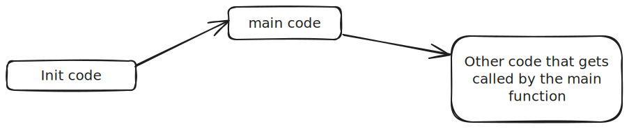
To understand 'init code', we need to understand how programs get loaded. Here we go...
Understanding program flow; Machine boot.
When the power button of a machine(laptop) is pressed, the following events occur (an inaccurate description):
-
Power flows into the processor. The processor immediately begins the fetch-execute cycle. Exept that the first fetch occurs from the ROM where the firmware is.
-
So in short, the firmware starts getting executed. The firmware performs a power-on-self test.
-
The firmware then makes the CPU to start fetching instructions from the ROM section that contains the loader. The loader is a program that can copy a program from memory and paste it in the RAM in an orderly way. By orderly way I mean ... it sets up the stack, adds some stack-control code to the RAM, it then loads up the different sections of the program. If the program has overlays - it loads up the code that implements overlay control too.
Essentially, the loader can paste a program on the RAM in a complete way. -
The loader loads the Bootloader onto the RAM.
-
The loader then makes the CPU to point to the RAM section where the Bootloader is situated.
-
The Bootloader on the other hand starts setting up the RAM sections in preparation for loading the kernel.
-
The Bootloader then copies the kernel onto the RAM and makes the CPU pointer to point to the entry point of the kernel. An entry-point is the memory address of the first instruction for any program.
-
The kernel then loads the apps that run on top of it...
Why are we discussing all these?
To show that programs get executed ONLY because :
-
They were loaded onto either the ROM or the RAM in a complete way. The stacks control, overlay-control and other control code routines were also copied onto the RAM together with the actual subject program. The action of copying 'control' code onto the RAM is part of Setting up the environment before program execution starts.
-
The CPU's instruction pointer happened to point to the entry point of the loaded program. An entry-point is the memory address of the first instruction for a certain program.
Loading a Rust Program
From the previous discussion, it became clear that to properly load a program, you have to setup its environment and identify its entrypoint.
A typical Rust program that depends on the std library depends on a program called 'crt0' to setup its initial environment. 'crt0' is sometimes called 'the C runtime Zero'. The 'crt0' then transfers control to the 'Rust-runtime'. The rust-runtime does its thing and then it finally calls the usual 'main' function.
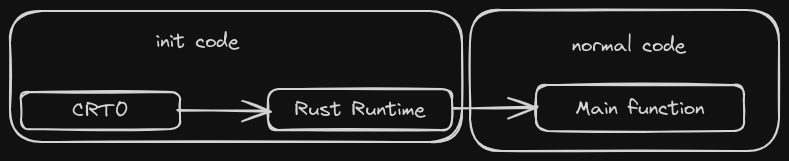
This is the normal entry point chain. ☝🏼
CRT0 (C runtime)
So what does the C runtime actually do?
What does setting up the environment mean?
What does runtime support mean?
Read about it here
The Rust Runtime
The entry-point of the Rust runtime is marked by the 'start' language item.
Rust only has a very minimal runtime, which takes care of some small things such as setting up stack overflow guards or printing a backtrace on panic. The runtime then finally calls the main function.
Fixing the Error
To save you some scrolling time, here is the error we are trying to fix.
error: using `fn main` requires the standard library
|
= help: use `#![no_main]` to bypass the Rust generated entrypoint and declare a platform specific entrypoint yourself, usually with `#[no_mangle]`
This error occurs because we have not specified the entrypoint chain of our program.
If we had used the std library, the default entry-point chain could have been chosen automatically ie the entry point could have been assumed to be the 'start' symbol that directly references the Rust runtime entrypoint.
To tell the Rust compiler that we don’t want to use the normal entry point chain, we add the '#![no_main]' attribute. Here's a demo :
#![allow(unused)] fn main() { #[no_std] #[no_main] use core::panic::PanicInfo; #[panic_handler] fn default_panic_handler(_info: &PanicInfo) -> !{ loop { /* magic goes here */ } } // main has just been trashed... coz... why not? It's pointless }
But when we compile this, we get a linking error, something like this ...
error: linking with `cc` failed: exit status: 1
|
# some lines have been hidden here for the sake of presentability...
= note: LC_ALL="C" PATH="/home/k/.rustup/toolchains/nightly-x86_64-unknown-linux-gnu/lib/rustlib/x86_64-unknown-linux-gnu/bin:/home/k/.cargo/bin:/usr/local/sbin:/usr/local/bin:/usr/sbin:/usr/bin:/sbin:/bin:/usr/games:/usr/local/games:/snap/bin" VSLANG="1033" "cc" "-m64" "/tmp/rustcWMxOew/symbols.o" "/home/k/ME/Repos/embedded_tunnel/driver-development-book/driver_code/target/debug/deps/driver_code-4c11dfa3f10db3d0.f20457jvl65bh2w.rcgu.o" "-Wl,--as-needed" "-L" "/home/k/ME/Repos/embedded_tunnel/driver-development-book/driver_code/target/debug/deps" "-L" "/home/k/.rustup/toolchains/nightly-x86_64-unknown-linux-gnu/lib/rustlib/x86_64-unknown-linux-gnu/lib" "-Wl,-Bstatic" "/home/k/.rustup/toolchains/nightly-x86_64-unknown-linux-gnu/lib/rustlib/x86_64-unknown-linux-gnu/lib/librustc_std_workspace_core-9686387289eaa322.rlib" "/home/k/.rustup/toolchains/nightly-x86_64-unknown-linux-gnu/lib/rustlib/x86_64-unknown-linux-gnu/lib/libcore-632ae0f28c5e55ff.rlib" "/home/k/.rustup/toolchains/nightly-x86_64-unknown-linux-gnu/lib/rustlib/x86_64-unknown-linux-gnu/lib/libcompiler_builtins-3166674eacfcf914.rlib" "-Wl,-Bdynamic" "-Wl,--eh-frame-hdr" "-Wl,-z,noexecstack" "-L" "/home/k/.rustup/toolchains/nightly-x86_64-unknown-linux-gnu/lib/rustlib/x86_64-unknown-linux-gnu/lib" "-o" "/home/k/ME/Repos/embedded_tunnel/driver-development-book/driver_code/target/debug/deps/driver_code-4c11dfa3f10db3d0" "-Wl,--gc-sections" "-pie" "-Wl,-z,relro,-z,now" "-nodefaultlibs"
= note: /usr/bin/ld: /usr/lib/gcc/x86_64-linux-gnu/11/../../../x86_64-linux-gnu/Scrt1.o: in function `_start':
(.text+0x1b): undefined reference to `main'
/usr/bin/ld: (.text+0x21): undefined reference to `__libc_start_main'
collect2: error: ld returned 1 exit status
= note: some `extern` functions couldn't be found; some native libraries may need to be installed or have their path specified
= note: use the `-l` flag to specify native libraries to link
= note: use the `cargo:rustc-link-lib` directive to specify the native libraries to link with Cargo (see https://doc.rust-lang.org/cargo/reference/build-scripts.html#cargorustc-link-libkindname)
This error occurs because the toolchain thinks that we are compiling for our host machine... which in this case happens to be a x86_64-unknown-linux-gnu machine.
To fix this error, we execute one of the following solutions :
- Specify a cargo-build for a triple target that has 'none' in its OS description. eg
riscv32i-unknown-none-elf. This is the easier of the two solutions, and it is the most flexible. - Supply a new linker script that defines our custom entry-point and section layout. If this method is used, the build process will still treat the host's triple-target as the compilation target.
If the above 2 paragraphs made complete sense to you, and you were even able to implement them, skip to the Debugging chapter
If they did not make sense, then you got some reading to do in the next immediate chapters... Cross compilation and linking.
Don't worry, we will get to a point where our bare-metal code will run without a hitch... but it's a long way to go. And its fun. Rainbows, uniorns and excalibars everywhere!!
Cross-Compilation
Normal Compilation
Compilation is the process of converting source code into machine code. For example, converting hello-world to machine code for either a x86 CPU or a Riscv Chip.
The compilation process for a single file roughly looks like this ...

When multiple files need to get compiled together, the linker gets introduced :

Target
If we are compiling program x to run on machine y, then machine y is typically referred to as the Target.
If we compile the hello-world for different targets, we may end up with object files that are completely different from each other in terms of file format and file content.
This is because the format and contents of the object file are majorly affected by the following factors :
- The CPU Architecture of the target
- The Vendor-specific implementations on both the software and hardware of the target machine.
- The Execution environment on which the compiled program is supposed to run on. In most cases the Execution environment is usually the OS.
- The ABI of the execution environment OR the object file format that is loadable in the execution environment.
To find out how these 4 factors affect the object file, read here.
So people started describing targets based on the state of the above 4 factors. For example :
Target x86_64-unknown-linux-gnu means that the target machine contains a x86 CPU, the vendor is unknown and inconsequential, the execution environment is an Operating system called Linux, the execution environment can interact with object files ONLY if they follow the GNU-ABI specification.
Target riscv32-unknown-none-elf means that the target machine contains a Riscv32 CPU, the vendor is unknown and inconsequential, the execution environment is nothing but bare metal, the execution environment can interact with object files ONLY if they follow the elf specification.
People usually call this target specifications triple targets...
Don't let the name fool you, some names contain 2 parameters, others 4 ... others 5.
The 'software world' has a 'naming' problem...once you notice it, you see it everywhere. For example, what is a toolchain? Is it a combination of the compiler, linker and assembler? Or do we throw in the debugger? or maybe even the IDE? What is an IDE?? Is a text Editor with plugins an IDE?? You see? Madness everywhere!!
Why are triple-target definitions important?
Because they help you in choosing and configuring your compiler, assembler and linker.
For example, if you were planning to compile program x for a x86_64-unknown-linux-gnu target....
- You would look for a x86_64 compiler, and install it.
- You would look for a x86_64 assembler, and install it.
- You would then look for essential Linux system files that could be linked to your program.
- You would look for a Linux implementation of the standard library
- You would look for a linker that can output GNU-ABI-compliant object files
- You would then configure all these tools and libraries to work together.
This is a lot of work and stress. But rust has a solution to this.
Enter target specification
The default Rust compiler is based on LLVM.
So it is modular, it has a back-end and a fron-end.
You can make the compiler to compile for a specific target by simply running the command :
# install the pre-configured back-end, there is no need for you to perform the 6 steps mentioned above
# This command does all of them... or rather, it modifies your already existing LLVM toolchain
rustup target add x86_64-unknown-linux-gnu
# cross-compile for any target whose backend has already been added
cargo build hello-world --target=x86_64-unknown-linux-gnu
Cross-compilation
The host machine is the machine on which you develop and compile your software.
The target machine is the machine that runs the compiled sotware.
Cross-compilation is the act of compiling a program for a target machine whose triple-target specification is different from the triple-target specification of the host machine.
Making cross-compilation easier with cargo
Example case :
We are compiling a program on a x86_64-unknown-linux-gnu machine. We intend to run the program on a riscv32-unknown-none-elf machine.
We could use the command-line like this...
cargo build --target=riscv32-unknown-none-elf
But this would require us to repeat a lengthy comand each time. To make work easier, we could instruct cargo to always compile for a certain triple-target within our cargo project.
This is achieved by modifying the .cargo/config.toml file
# This is the .cargo/config.toml file
[build]
target = riscv32-unknown-none-elf
So each time you want to build the project, you run the usual command ...
cargo build
Cargo is an awesome tool, learn more about it in the Cargo Book
Linking
SOLID CHOICES :
Linking is a VERY fundamental topic.
It is best to learn it slowly and in full from the docs. It will be worth it; You will save yourself hundreds of hours in the future if you make the first read intentional. Be patient with yourself, restrain from skimming through the docs if it's your first time.
For this reason, this book will not spoil or water-down the purity of the linking docs.
This book will however :
- assume that you have read the docs.
- Briefly explain LLD linker usage in Rust targets
- Demonstrate how to fix the no-std linking error encountered in the previous chapter
- Demonstrate how to build a full linker script for the Esp32c3 board. (found in a much ater chapter)
Note-worthy docs
- Start with this 3-minute video demonstrating the role of the linker from a high level.
- Then move to this doc. It is gentle, covers the basics and its short.
- And finally finish it with this more detailed docs. The two most important pages there are on memory description and memory abstraction.
Rusty Linkers
This chapter assumes that you have understood the LD docs
There are many linkers in existence. However the two dominant linkers are :
- The LD linker (also called the GNU linker)
- The LLD linker (also called the LLVM linker)
The Rust toolchain is a modification of the LLVM toolchain, so it uses the LLVM linker by default. You can however configure it to use ld with the help of Cargo.
Subtle but important differences.
1. Automatic linker-script generation.
The ld linker ALWAYS requires a manually-defined linker script to function. The LLD (the LLD linker) doesn't always use a manually-defined linker script like LD (the GNU linker).
In many cases, LD.LLD can automatically generate linker scripts internally based on the target architecture, format, and other parameters specified during the linking process. This means that LD.LLD can handle the linking process without requiring an explicit linker script provided by the user.
However, LD.LLD does provide options to allow users to specify custom linker scripts if needed. Users can pass a custom linker script to LD.LLD using command-line options or configuration files, similar to how it's done with LD. This gives users flexibility in defining the linking behavior and organizing the output binary according to their specific requirements.
2. Cross linking and the existence of flavours
The ld linker is a monolith. There is only one ld linker. If you want to compile something into an elf, you supply the linker with an elf-generating linker script. If you need a wasm binary file, you supply it with a corresponding linker script.
This may seem simple at first, but writing a correct linker script is usually not an easy task. To solve this problem, the LLVM linker implemented the concept of ports AND flavours.
The LLVM linker is not a monolith, it is made up of different specialized linkers within itself. These sub-linkers are called flavours.
The flavours are linkers that are specialized in producing object files for supported targets. For example, Let's say you want to produce a unix elf file, instead of writing a complex & erronous linker script, you use the LD.LLD linker flavour and it will automatically generate an internal script for you. This is what makes LLD a cross-linker by default.
There are currently 4 lld flavours :
- LD.LLD (unix) : specializes in generating object files and executables for Unix-like operating systems, such as Linux and FreeBSD. It supports formats like ELF (Executable and Linkable Format) and handles symbol resolution, linking libraries, and generating debug information specific to Unix environments.
- ld64.lld (macOS) : secializes in producing object files and executables for macOS and other Apple platforms. It supports the Mach-O (Mach Object) file format used on macOS
- lld-link (Windows) : specializes in generating object files and executables for Windows-based systems. It supports the PE (Portable Executable) file format used on Windows, handles symbol resolution, and integrates with Windows-specific tools and libraries for linking applications and generating executables compatible with the Windows environment.
- wasm-ld (WebAssembly) : This flavour is a work in progress. It specializes in producing WebAssembly (Wasm) modules and executables that follow wasm specifications.
Implications of those subtle differences
Adding a target using the rustup target add literally adds a LLVM back-end that includes an LLD-flavour configured for the subject target. Declaring linker scripts is optional.
To view the defult lld flavour of a supproted target, run the following command :
# Replace `riscv32i-unknown-none-elf` with a target of your liking
rustc -Z unstable-options --target riscv32i-unknown-none-elf --print target-spec-json
Feedback :
{
"arch": "riscv32",
"atomic-cas": false,
"cpu": "generic-rv32",
"crt-objects-fallback": "false",
"data-layout": "e-m:e-p:32:32-i64:64-n32-S128",
"eh-frame-header": false,
"emit-debug-gdb-scripts": false,
"features": "+forced-atomics",
"is-builtin": true,
"linker": "rust-lld", # HERE is the linker name... it could have been something like ld
"linker-flavor": "gnu-lld", # HERE is the linker Flavour
"llvm-target": "riscv32",
"max-atomic-width": 32,
"panic-strategy": "abort",
"relocation-model": "static",
"target-pointer-width": "32"
}
Probing
Probing is the act of interacting with the microcotroller via a debug adapter with the aim of doing at least one of the following...
- Flashing a compiled program onto the RAM or ROM of the microcontroller.
- Performing some In-system programming
- Debugging the running program
- Testing the functionality of the microcrontroller
This chapter walks through the first 3 tasks while assuming that...
- Your host machine is a linux box
- Your target machine is an esp32c3 SoC.
This chapter has also been divided into two :
- The theory behind probing
- The practicals
You choose how you'd like to read through it.
Probing Theory
What is probing really? How is it achieved? What's flashing? What's in-system programming? Debugging?
Probing
Probing is the act of interacting with a microcontroller... or a device that does not have a comprehensive User Interface.
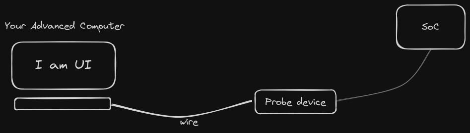
Interacting may mean one of the following :
- In-system programming - this is the process of accessing the RAM and ROM of components in the SoC in such a way that you can change the firmware code.
- Monitoring - this is the act of fetching data on the events happening in the SoC for the sake of maybe debugging.
- Flashing - Flashing is a fancy name for : "using in-system programming to wipe out all the current firmware in the memory and replacing them with fresh new lines"
- SoC testing (eg boundary scan testing) - this is the act of testing whether the circuitry of the SoC works as expected.
How are probing devices able to interact with a chip?
"A probing device is able to interact with a chip because the probe device interfaces with the boundary-scan interface present on the chip."
An SoC is made up of circuits. To test whether the circuits worked as exected, the designers of the past used to use test fixtures but with time they settled for using on-chip test circuits.
An popular and standard example of on-chip test circuitry is the Boundary-scan.
With time, it became clear that boundary scans could control and affect how the SoCs worked if connected properly. They could even be used to read and write to the RAM and ROM if attached to the DMA controller. They could be used to monitor the signals coming in and out of the Core. They could be used to inject stub data to the pins of the core and thus manipulate the core itself... Boundary-scans became the holy-grail of monitoring and manipulating SoCs.
With time people came up with boundary scan standards that roughly specified :
- How the circuitry was hooked up.
- How the physical interface between the scan and external probes was to b implemented.
- The communication protocol between the scan and external probes.
One open and stadardized boundary scan is called the JTAG standard.
There is also another proprietary on-chip test circuitry called SWD.
All this info might not make sense on the go...
Go watch this video by EEVBlog, it puts things into persective.
After that video, you might want to get your definitions and structures right by reading a more formal but simple technical guide by the xjtag organization.
By the end of all that reading and video-watching, the figure below should make total sense... in fact, you should be very very mad because it misses out on some important components :
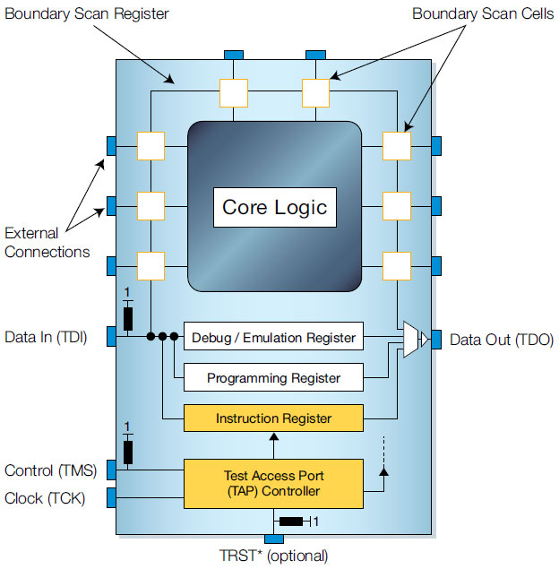
The Probe/ Debug Adapter
From here on, the term JTAG will be used a synonym for Boundary-scan-circuit.
The probe/debug adapter is the physical device that connects a normal computer to the JTAG interface. This is because the JTAG interface is not directly compatible to the ports found on a normal computer. For example the USB port found on a computer cannot directly connect to the 4 pins of the JTAG port.
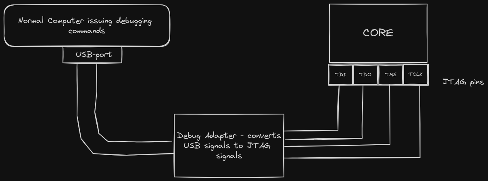
Open-OCD and its alternatives
So how does the host computer know which signals to send to the Debug adapter?
There is a program called OpenOCD. OpenOCD is a software abstraction of the JTAG protocol. This software program consumes high-level debug commands and outputs JTAG-level commands through the USB port.
From there, the drivers found in the debug adapter convert those USB-wrapped-JTAG-electrical signals into a 4-split output as shown below :

There are many alternatives to OpenOCD... eg Probe-rs and SJLink. OpenOCD was used here just because it is a popular and battle-tested software. So whenever we mention OpenOCD, we are indirectly referring to all the JTAG-protocol software implementations; it is inaccurate but convenient.
Just to clarify, the high level commands that get consumed by OpenOCD do not necessarily have to come from the GDB debugger, they can come from any software that can interface with the API. For example 'flashing programs' and 'Monitoring programs' can also apply here... even well interfaced bash scripts are allowed!
GDB and its alternatives
GDB (GNU Debugger) is a debugging software that has a well defined debugging protocol. There are many other debugging software and corresponding protocols... but we'll stick to GDB because it is has great support, well documented and it has many functionalities. It is battle-tested.
There are three modules of the GDB that are worth noting here :
- The GDB main application (mostly a CLI, but there are GUI implementions too)
- The gdb server
- The gdb stub
The GDB CLI is the core application, the engine. It is interactive and complete.
The gdb server is a proxy between GDB CLI and other applications. Its main roles are :
- Listening & Receiving data/instructions from the GDB CLI
- Listening & Receiving data/instructions from the application that has been interfaced to the GDB CLI
- Passing on received data to the opposite end of the channel.
The gdb stub the gdb stub has two meanings depending on the context. And before we define the meanings, we'll take a detour to understand a tiny part of how a debugger works.
The Detour: How a debugger works
Suppose you are debugging program x on your linux machine... the debub program and program x will run as two seperate processes.
Debugging Information:
When you compile a program with debugging information enabled, the compiler includes additional metadata in the executable binary. This metadata provides GDB with information about the source code, such as variable names, line numbers, function names, and the layout of the program's memory.
Launching the Program:
To debug a program with GDB, you typically start GDB and specify the executable binary of the program as an argument.
GDB loads the executable binary into memory (RAM) and prepares it for debugging. It also reads the debugging information embedded in the binary to understand the structure of the program.
Injecting extra code
When you set debugging breakpoints, what GDB actually does is to insert 'control code' in the process x's RAM text section. Same case to the continue gdb instruction.
During execution, the program's code resides in memory, where it can be modified by the debugger for debugging purposes. This modification is temporary and does not alter the original program file on disk.
When GDB inserts a breakpoint or other debugging instruction, it's modifying the program's code in memory, not the original source code file. This modification allows the debugger to interrupt the program's execution at specific points and provide debugging information to the user without permanently altering the program itself.
Back from the Detour: Defining gdb stub
In the normal debugging context (i.e in a non-embedded environment), the word gdb stub means 'a file that contains the implementations of the control code that usually gets injected by the debugger into the process' memory.
You can learn more about this from the official gdb docs on stubs
In the embedded context, the gdb stub is a piece of firmware that implements the 'control code' that gets inserted in the process' memory. It also contains an implementation of code that allows it to communicate to the gdb server. This GDB stub is usually found on the target machine or the debub probe.
GDB stubs are commonly used in embedded systems for facilitating communication between the target device and the debugger.
Probing Pracs
These pracs will take you through the process of ...
- Configuring the interconnection between the host machine and the target board using udev
- Configuring gdb-to-openOCD-to-chip for the sake of flashing and debugging.
- Setting up defmt and RTT crate for chip monitoring and logging.
- Setting up a no-std testing framework
At the moment, this chapter is under development.
So in the meantime, we will take a shortcut and use the esp-based tools that abstract away all the intricacies of manually setting things up.
Manually setting things up is a good way to learn, but we will take a curve just this one time.
Udev
Reference tutorial : https://opensource.com/article/18/11/udev
Udev stands for User-Device manager.
It is one of linux's subsystems. You can find the other subsystems in the root folder '/sys'.
Udev is the Linux subsystem that supplies your computer with device events.
When you plug in a device to your linux pc...
- The device gets detected by some of udev submodules.
- The device gets abstracted as a file stored in the
/devroot directory. - Udev starts and continues to act as a message proxy between the kernel and device.
- Udev continuously listens and detects events induced by the external device and relays this info to the kernel.
- The kernel on the other hand, returns action responses to udev. Udev then invokes the necessary action given by the kernel responses.
The above description is somehow inaccurate and is given to provide a high-level overview of what happens. To read on the exact order and definitions of things, consult official udev docs.
Listing attached devices
The process of detecting and abstracting attached devices as files in the /dev directory happens automatically.
To view attached devices, you can browse through the /dev directory OR use the following cmd commands :
lsusb# List all the devices that have been attached to the USB-controllers
lsblk # List all block devives
lscpu # List all CPUs
lspci # Lists all PCI devices
Reading the results from the cmd commands
Here is an example of a reading :
> lsusb
Bus 001 Device 002: ID 8087:8001 Intel Corp. Integrated Hub
Bus 001 Device 001: ID 1d6b:0002 Linux Foundation 2.0 root hub
Bus 003 Device 002: ID 0424:5534 Microchip Technology, Inc. (formerly SMSC) Hub
Bus 003 Device 001: ID 1d6b:0003 Linux Foundation 3.0 root hub
Bus 002 Device 004: ID 05c8:0374 Cheng Uei Precision Industry Co., Ltd (Foxlink) HP EliteBook integrated HD Webcam
Bus 002 Device 003: ID 8087:0a2a Intel Corp. Bluetooth wireless interface
Bus 002 Device 005: ID 0461:4d22 Primax Electronics, Ltd USB Optical Mouse
Bus 002 Device 002: ID 0424:2134 Microchip Technology, Inc. (formerly SMSC) Hub
Bus 002 Device 038: ID 04e8:6860 Samsung Electronics Co., Ltd Galaxy A5 (MTP)
Bus 002 Device 001: ID 1d6b:0002 Linux Foundation 2.0 root hub
The above output depicts that...
- There are at least three USB controllers denoted by the term BUS [1 - 3]. Note that a USB-port is not synonymous to USB-controller.
- The
Ltd USB Optical Mousehas a device ID of4d22 - The
Ltd USB Optical Mousehas a Vendor ID of0461 - The
Ltd USB Optical Mousehas been attached USB-port 005 of the second USB-controller - The file that abstracts
Ltd USB Optical Mouseis/dev/bus/usb/002/005.
Udev's Real-time monitoring of device-events
With the udevadm monitor command, you can tap into udev in real time and see what it sees when you plug in different devices. Become root and try it.
> sudo -i
> udevadm monitor
The monitor function prints received events for:
- UDEV: the event udev sends out after rule processing
- KERNEL: the kernel uevent
With udevadm monitor running, plug in a thumb drive and watch as all kinds of information is spewed out onto your screen. Notice that the type of event is an ADD event. That's a good way to identify what type of event you want.
Udev's info snooping
You can view the info for a particular device by using the command : udevadm info [OPTIONS] [DEVPATH|FILE].
For example :
# suppose the lsusb command had the folowing output...
# Bus 002 Device 005: ID 0461:4d22 Primax Electronics, Ltd USB Optical Mouse
# Then you would get info about the mouse by...
udevadm info /dev/bus/usb/002/005
Udev scripts
You can write scripts for udev. For example, you may automatically make your flash-drive trigger the execution of a bash script whenever it gets plugged in a specific usb-port.
In normal scripting/programming, you usually identify an object using something like a variable name. However, in udev scripting, you identify devices based on a set of attributes. The more specific the atributes, the more you narrow your reference to a specific device.
Here is a rough format of an instruction :
# This is an exerpt from a udev script
# The following statement means ....
# Whenever a USB device gets ADDed (plugged-in), the 'thumb' script gets ran
SUBSYSTEM=="usb", DRIVER=="usb", ACTION=="add", RUN+="/usr/local/bin/thumb
# But this rule is more specific... it does not specify just a usb device,
# it specifies the product ID and vendor ID of the device
SUBSYSTEM=="usb", DRIVER=="usb", ATTR{idProduct}=="4d22", ATTR{idVendor}=="0461", ACTION=="add", RUN+="/usr/local/bin/thumb_for_mouse
To find the specific attributes of a device and all of its parents, use the command below :
udevadm info -a /dev/bus/usb/002/005
Udev fetches its scripts from /etc/udev/rules.d/.
The script files end with the a .rules extension.
The script files usually begin with a number to show the order in which the scripts get parsed by udev. For example 80-usb-script.rules will get executed before 81-usb-extra-script.rules.
So why were we learning about Udev?
Well, two reasons...
- It's essential knowledge, especially if you'll be handling devices using the linux kernel.
- We will need to interact with the device files. The problem is that the device files are only writable by
root. So we need to make the files that we need accessible to our normal development account.
Pracs
- Attach your Esp32c3 to your computer using a usb cable.
- You will notice that 2 new files get generated under the
/devdirectory. One under tty (eg ttyACM0) and one under/dev/bus. Figure out where and why. These 2 files are there to abstract your device and the USB connection. - Write a script to make these two files accessible to your linux account.
Done!!
Flashing
In embedded development, "flashing" typically refers to the process of writing or programming the firmware or software onto a microcontroller or other embedded system's non-volatile memory. This non-volatile memory can be flash memory, EEPROM (Electrically Erasable Programmable Read-Only Memory), or similar types of memory that retain data even when power is removed.
We will use the esp-flash tool. A tool purposefully built to flash programs into esp boards like our very own Esp32c3.
We could have used other tools like OpenOCD and Probe-rs because they are more generic than espflash. Once you learn them, you can tweak them for different platforms. Espflash is specialized, readers are advised to learn other tools in order to have a holisti growth.
We will use espflash in order to escape the trouble of writing our own configs and flashing algorithm.
The honors of flashing... finally
The esp-rs team did a good job with their docs. Go through the flashing page and do the honors.
Monitoring and Logging
draft_1
This page explains how we are going to achieve logging in our setup.
Typical logging architecture
So how does logging happen? How is the log data encoded? How is the data transmitted? How does the host machine receive and display the log data?
Here is a rough architecture....
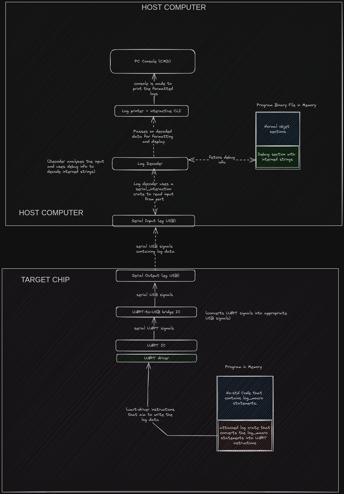
Well... there's a lot to unpack here.
Registers and MMIO programming
You know your hardware by reading the relevant parts of your datasheet.
Your hardware is like a library, the datasheet is its documentation.
MMIO Programming
But before we talk about the datasheets, let't talk about MMIO-programming.
MMIO involves using memory addresses as an interface to communicate with and control hardware devices.
Memory-Mapped I/O refers to the technique of accessing hardware registers and controlling peripherals using memory addresses. Instead of specialized instructions, developers interact with hardware by reading from and writing to specific memory addresses, treating hardware like memory-mapped regions.
Hardware Registers: Peripherals and hardware components are often controlled by registers, each associated with a specific functionality (e.g., configuration, data transmission, status).
So to control hardware, you read and write to the respective registers... or memory regions.
The Volatile key word
Quick detour :
Facts :
- Your code does not always get executed procedurally.
- Some lines from your code get ignored or cut out by the compiler or CPU.
The compiler optimizes the order of instructions, it even makes assumptions : eg
#![allow(unused)] fn main() { let register_1 = 1; // insert other instructions here let register_1 = 1; }
can be optimized to
#![allow(unused)] fn main() { let register_1 = 1; // insert other instructions here // let register_1 = 1; // gets truncated }
The CPU also optimizes and changes the order of those instruction even further.
If you add parallelism to the matter... it just makes it impossible to be sure that your instructions get executed in a specific order.
These optimizations are bad if the changes to the register truly matter.
Enter the volatile key-word... the superhero
The volatile keyword makes reads and writes to be atomic and un-reordered(if that'ts a word).
It is the embodiement of :
"Hey, compiler and CPU, no optimizations should affect the order of my reads and writes. I cannot deal with surprises please"
useul when the order and timing of reads and writes are critical, and the compiler should not make any assumptions about the potential side effects of these operations.
example in rust :
// Import necessary modules use core::ptr; fn main() { // Define a mutable pointer to a memory-mapped address let mut mmio_ptr = 0x4000_0000 as *mut u32; unsafe { // Read from a volatile memory-mapped address let value = ptr::read_volatile(mmio_ptr); println!("Read value: {}", value); // Write to a volatile memory-mapped address let new_value = value + 1; ptr::write_volatile(mmio_ptr, new_value); println!("Written new value: {}", new_value); } }
Summary :
- You control hardware by reading and writing to its registers.
- All reads and writes to the registers have to be done using the volatile keyword.
Question : Why do you think Volatile reads and writes are not the default methods. why are unpredictable reads and writes the default methods?
Knowing your Hardware
Your hardware is like a library, to use it correctly, you should know it well... or at least know the relevant parts.
To understand your hardware, you read the datasheet. Like this one : the esp32 datasheet
The 20% of the 100%, the important parts :
- Understand the functional features and capabilities
- Understand the hardware registers AND pins of the hardware you want to control.
What's the diference between pin and a register in mmio?
Figures
-
Physical board with Pins 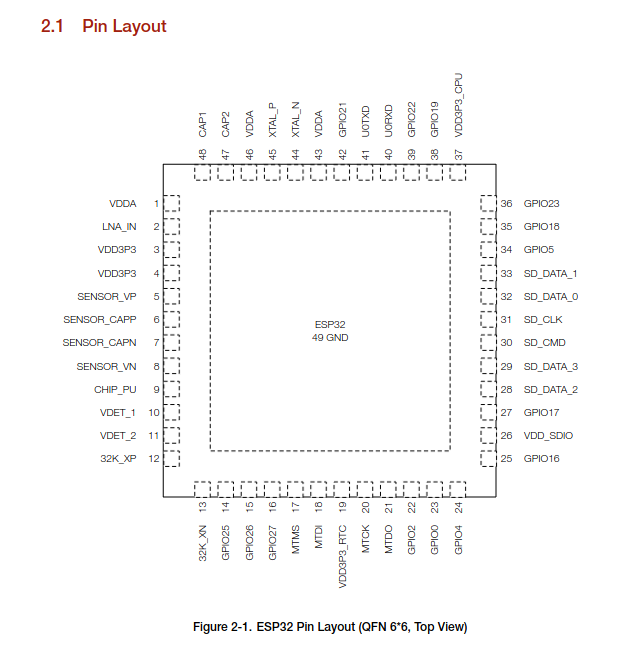
-
Pin Layout 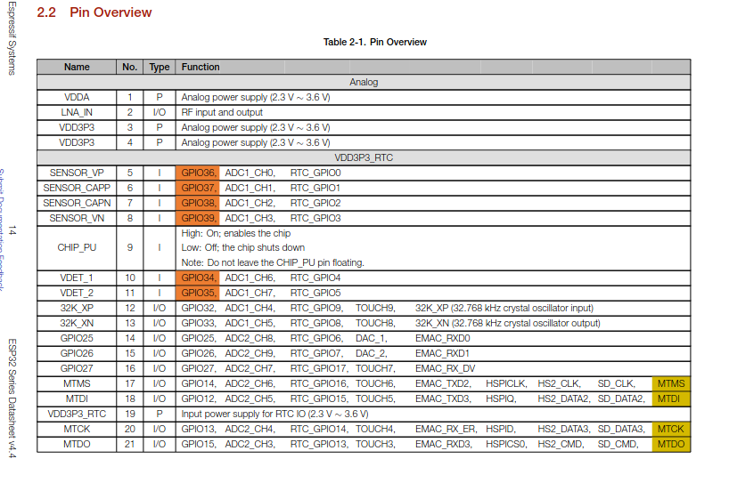 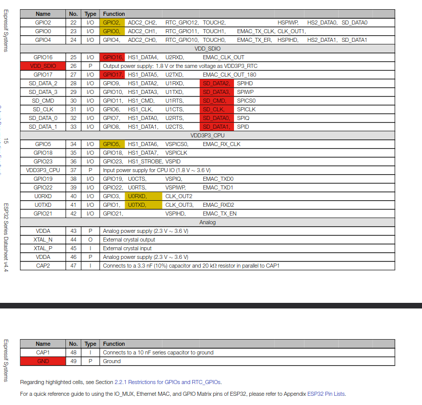
-
Memory Layout (Registers + Actual_memory) 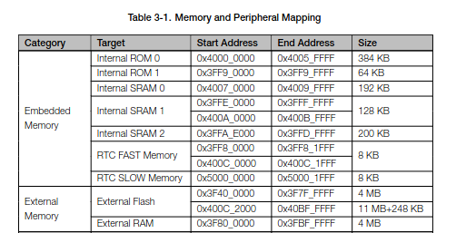 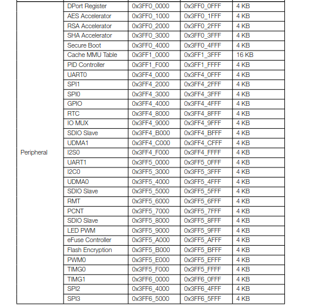 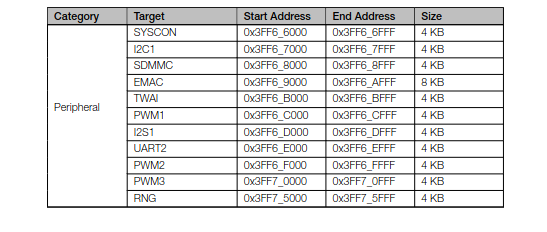
svd2rust
Once you read the datasheet, and understand the memory mapping, pin-layout and whatever else you wanted to get straight, you begin to safely abstract the board.
SVD files
An svd file is a file that describes the peripherals of a board using xml. So you could say that an svd file is a board abstracted as an xml template.
SVD is the abbreviation for : System View Description.
The svd file outlines :
- The boards metadata eg boardname, board version, feature description, vendor name
- Major component info : eg CPU_capabilities, Endianness, address_width, added cpu_extensions...
- all list of all the peripherals
- the registers of each peripheral
- the functions of each register
- the memory address of each register
- the read/write access of each register
You can find sample svd files here, they are from the espressif organization.
Here is the esp32C3 svd file that we will be using : ESP32_C3 svd file
Here is a snippet of a sample svd file :
<?xml version="1.0" encoding="UTF-8"?>
<device schemaVersion="1.1" xmlns:xs="http://www.w3.org/2001/XMLSchema-instance" xs:noNamespaceSchemaLocation="CMSIS-SVD_Schema_1_1.xsd">
<vendor>ESPRESSIF SYSTEMS (SHANGHAI) CO., LTD.</vendor>
<vendorID>ESPRESSIF</vendorID>
<name>ESP32-C3</name>
<series>ESP32 C-Series</series>
<version>17</version>
<description>32-bit RISC-V MCU & 2.4 GHz Wi-Fi & Bluetooth 5 (LE)</description>
<!-- snip snip snipped some lines -->
<cpu>
<name>RV32IMC</name>
<revision>r0p0</revision>
<endian>little</endian>
<mpuPresent>false</mpuPresent>
<fpuPresent>false</fpuPresent>
<nvicPrioBits>0</nvicPrioBits>
<vendorSystickConfig>false</vendorSystickConfig>
</cpu>
<!-- snip snip snipped some lines -->
<peripherals>
<!-- here is 1/32 peripherals -->
<peripheral>
<name>UART0</name>
<description>UART (Universal Asynchronous Receiver-Transmitter) Controller 0</description>
<groupName>UART</groupName>
<baseAddress>0x60000000</baseAddress>
<addressBlock>
<offset>0x0</offset>
<size>0x84</size>
<usage>registers</usage>
</addressBlock>
<interrupt>
<name>UART0</name>
<value>21</value>
</interrupt>
<registers>
<register>
<name>FIFO</name>
<description>FIFO data register</description>
<addressOffset>0x0</addressOffset>
<size>0x20</size>
<fields>
<field>
<name>RXFIFO_RD_BYTE</name>
<description>UART 0 accesses FIFO via this register.</description>
<bitOffset>0</bitOffset>
<bitWidth>8</bitWidth>
<access>read-write</access>
</field>
</fields>
</register>
<!-- more registers -->
<register>
</register>
</register>
<!-- more registers -->
<peripheral>
<!-- snipped out the other 31 peripherals -->
<peripherals>
svd2Rust
This is a tool that takes in svd files and outputs Rust code that reflects the contents of the svd file.
Why use svd2rust instead of doing the abstraction manually?
Before we discuss whether you should do it manually or not. Let's settle out some facts first.
A full-fledged board has many components. The datasheet reference is like >700 pages. These components are dependent on each other.
You get some form of info overload. How can you create complete abstractions if you do not fully understand the board and how they are interdependent on each other? Enter headaches and suicidal thoughts.
If you look at the esp32c3.svd file, you realize it is >35000 lines. But at-least the svd file provides a complete abstraction from the >700 page datasheet.
When to do it manually
- When you fully understand all the details about a peripheral
- When you also fuly understand all the direct components that the target peripheral depends on.
- When you can comfortably abstract the peripheral and its dependents, in a safe way: critical sections, atomics and all that vodoo when accessing registers.
- When you do not need to abstract the whole board.
When to do it automatically
- When you dont mind abstracting all the peripherals
- When you want a library to automatically implement the access-safety methods of accessing registers. You don't have to implement atomic vodoo on your own.
- When you want to use a standard way of abstracting the board. Your whole team uses the same template. Everyone speaks the same language, everyone becomes happy.
svd2rust
To understand svd2rust, let's :
- read its docs
- experiment with it a little
- Do our abstractions manually without depending on svd2rust
- Go back to svd2rust while fully appreciating all the manual work it does for us
draft_1
This chapter covers theory on the uart.
What is the UART?
Before tackling the meaning of UART, let's get the acronyms out of the way.
- UART stands for
Universal Asynchronous Receiver/Transmitter. - Tx stands for
Transmitter. - Rx stands for
Receiver.
The UART is an integrated circuit that takes in parallel data from one end and outputs serial data on the other end. It also receives serial data from one end and outputs parallel data on the other end.
So it you connect two UARTs as seen below, you achieve serial communication between two devices that have parallel data buses.
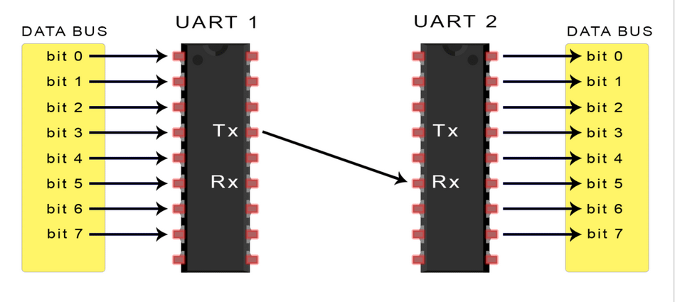
What does asynchronous mean in this case?
"Asynchronous" refers to the method by which data is transmitted and received between two independent devices without requiring a shared clock signal between the transmitting and receiving devices.
Instead of using a clock to synchronize the rate at rate at which bits are exchanged, the two communicating devices agree on the data-packet format and the rate of transmitting the bits of that data-packet.
The rate at which the bits of the data-packet are transmitted is referred to as baud rate in this context.
So is UART a serial-communication protocol?
Well... The UART is not a communication protocol itself but rather a hardware component or module that facilitates serial communication between devices. You could say that it is circuitry that serves as the underlying hardware mechanism for implementing various communication protocols such as RS-232, RS-485, MIDI, and others
Confusing... right? ha ha.
How the UARTs work.
In UART communication, two UARTs communicate directly with each other. The transmitting UART converts parallel data from a controlling device like a CPU into serial form, transmits it in serial to the receiving UART, which then converts the serial data back into parallel data for the receiving device.
Only two wires are needed to transmit data between two UARTs. Data flows from the Tx pin of the transmitting UART to the Rx pin of the receiving UART:
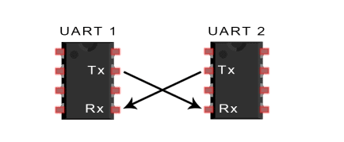
UARTs transmit data asynchronously, which means there is no clock signal to synchronize the output of bits from the transmitting UART to the sampling of bits by the receiving UART. Instead of a clock signal, the transmitting UART adds start and stop bits to the data packet being transferred. These bits define the beginning and end of the data packet so the receiving UART knows when to start reading the bits.
When the receiving UART detects a start bit, it starts to read the incoming bits at a specific frequency known as the baud rate (bits per second). Both UARTs must operate at about the same baud rate. The baud rate between the transmitting and receiving UARTs can only differ by about 10% before the timing of bits gets too far off.
So before any data transfer actually happens, the two UARTs must agree on :
- The Data packet format
- The Baud rate (bps)
Example Case :
The UART that is going to transmit data receives the data from a data bus. The data bus is used to send data to the UART by another device like a CPU, memory, or microcontroller. Data is transferred from the data bus to the transmitting UART in parallel form.
After the transmitting UART gets the parallel data from the data bus, it adds a start bit, a parity bit, and a stop bit, creating the data packet.
Next, the data packet is output serially, bit by bit at the Tx pin. The receiving UART reads the data packet bit by bit at its Rx pin. The receiving UART then converts the data back into parallel form and removes the start bit, parity bit, and stop bits. Finally, the receiving UART transfers the data packet in parallel to the data bus on the receiving end.
If the communication between the two is asynchronous, how do they agree with each other in the first place?
-
Manual Configuration: In many systems, the baud rate is manually configured by the user or system designer. This involves setting the baud rate to a specific value (e.g., 9600 bps, 115200 bps) on both the transmitting and receiving UARTs. The configuration is typically done through software or hardware settings.
-
Default Baud Rate: In some cases, UART devices may have default baud rate settings. If both devices are configured to use the same default baud rate, no additional configuration is necessary.
-
Negotiation: In more advanced systems, UART devices may support auto-baud detection or negotiation protocols. Auto-baud detection allows a UART receiver to automatically determine the baud rate of incoming data by analyzing the timing of the start bits. This can be useful when the baud rate is not known in advance or may vary.
-
Hardware Handshaking: In certain situations, UART communication may also involve hardware handshaking signals (such as RTS/CTS - Request to Send/Clear to Send) to coordinate communication between devices. These signals can help ensure that data is only transmitted when the receiving device is ready to receive it, reducing the risk of data loss or corruption.
The UART data packet
The format of the data packet needs to be agreed upon by the two communicating UART circuits as earlier mentioned.
The format is typically structured as follows.... 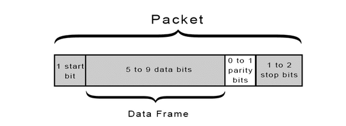
- Start Bit: The start bit signals the beginning of the data byte. It is always set to a low voltage level (logic 0). The duration of the start bit is one bit duration, determined by the baud rate.
The UART data transmission line is normally held at a high voltage level when it’s not transmitting data. To start the transfer of data, the transmitting UART pulls the transmission line from high to low for one clock cycle. When the receiving UART detects the high to low voltage transition, it begins reading the bits in the data frame at the frequency of the baud rate.
- Data Bits: These are the actual bits representing the data being transmitted.
The number of data bits can vary, but common configurations include 7 or 8 bits per data byte. It can be 5 bits up to 8 bits long if a parity bit is used. If no parity bit is used, the data frame can be 9 bits long.
The data bits are typically transmitted LSB (Least Significant Bit) first. The duration of each data bit is determined by the baud rate.
- Parity Bit (Optional): The parity bit, if used, is an additional bit for error detection. It can be set to even parity, odd parity, mark parity, space parity, or no parity (none).
Parity describes the evenness or oddness of a number. The parity bit is a way for the receiving UART to tell if any data has changed during transmission. Bits can be changed by electromagnetic radiation, mismatched baud rates, or long distance data transfers. After the receiving UART reads the data frame, it counts the number of bits with a value of 1 and checks if the total is an even or odd number. If the parity bit is a 0 (even parity), the 1 bits in the data frame should total to an even number. If the parity bit is a 1 (odd parity), the 1 bits in the data frame should total to an odd number. When the parity bit matches the data, the UART knows that the transmission was free of errors. But if the parity bit is a 0, and the total is odd; or the parity bit is a 1, and the total is even, the UART knows that bits in the data frame have changed.
- Stop Bit(s): The stop bit(s) signal the end of the data byte. Typically, one or two stop bits are used. The stop bit(s) are set to a high voltage level (logic 1). The duration of each stop bit is determined by the baud rate.
Advantages of using UARTs
- Simple, Only uses two wires
- Simple, No clock signal is necessary.
- Has a parity bit to allow for error checking
- It can accomodate custom communication protocols; The structure of the data packet can be changed as long as both sides are set up for it
- Well documented and widely used method
Disadvantages of using UARTs
- The size of the data frame is limited to a maximum of 9 bits.In scenarios where larger data sizes need to be transmitted, the limitation to 9 bits per frame can result in inefficiencies. It may require breaking down larger data sets into multiple frames, which can increase overhead and decrease overall efficiency.
- Doesn’t support multiple slave or multiple master systems
- The baud rates of each UART must be within 10% of each other
Clarifications
As seen from the image at the top of the page, the connection uses two wires to transmit data between devices. But in practice, you may use 3 wires for each device. For example, the 3 wires attached to UART 1 will be :
- The Transmitter wire (Tx wire) from UART 1 to UART 2
- The Receiver wire (RX) from UART 2 to UART 1
- The Ground wire
credits and references
- Credits go to this circuitbasics blog, for the images and elaborate content. You can give it a read.
- If you want to learn about the different serial communication protocols associated with the UART, this Raveon technical brief provides a short overview
draft_2
This chapter covers the theory on UART registers.
Notable Crates
For bare metal programming
- heapless
- critical-section
- portable-atomic
- bit-field, bitfield
- bit-flags
- embedded-hal
- embedded-dma : This library provides the ReadBuffer and WriteBuffer unsafe traits to be used as bounds to buffers types used in DMA operations.
- fugi : time crate for embedded systems
- nb : Minimal and reusable non-blocking I/O layer
- riscv
- riscv-rt
- volatile-register
- vcell : Just like Cell but with volatile read / write operations
Utility-like
- svd2rust + form + rustfmt
- defmt : A highly efficient logging framework that targets resource-constrained devices, like microcontrollers. Check out the defmt book at https://defmt.ferrous-systems.com for more information about how to use it.
- embassy crates
- probe crates
- clap
- ratatui
- serde
more tertiary for now
- cfg-if : A macro for defining #[cfg] if-else statements.
Why Embedded Rust
Memory Safety:
Rust's ownership system and borrow checker ensure memory safety without the need for a garbage collector. This helps prevent common issues like null pointer dereferences, buffer overflows, and data races.
Concurrency and Parallelism:
Advantage: Rust provides ownership-based concurrency control, allowing developers to write concurrent code without the risk of data races. The language's emphasis on zero-cost abstractions enables efficient parallelism.
Nice integration with C and C++... and their respective tools
- Rust has a robust FFI that allows seamless integration with C and C++ code.
- Cargo integrates well with tools that are popular in the embedded world, so a C developer needs not learn ALL NEW things. For example the default toolchain components are extended LLVM or GNU components. You can integrate C library and build tools in a seamless manner in your project.
Ergonomics
- Tools are considerably documented.
- Helpful community
- many helpful tools & crates... especially the compiler itself.
Naive but somehow true perspective : Rust enables you to write complex software (even as a junior), your implementation is not 100% dependent on your experience level.
Newlib
Newlib is a lightweight and efficient C library primarily designed for embedded systems and other resource-constrained environments. It provides standard C library functionality, including input/output, string manipulation, memory management, and more, while prioritizing small size and minimal overhead. Although it aims to offer POSIX compatibility, Newlib may not implement the full range of POSIX functions found in larger libraries like glibc. Suitable for standalone usage or integration into embedded development toolchains, Newlib serves as a practical choice for projects where conserving resources is paramount and where comprehensive POSIX compliance is not a strict requirement.
glibc (GNU C Library):
glibc is the standard C library for the GNU operating system and most Linux distributions.
It provides comprehensive POSIX compatibility and a wide range of features, but it is relatively large and may not be suitable for embedded systems with limited resources.
musl libc:
musl is a lightweight, fast, and efficient C library that aims to provide POSIX compatibility with minimal overhead. It is designed to be small and suitable for embedded systems and other resource-constrained environments.